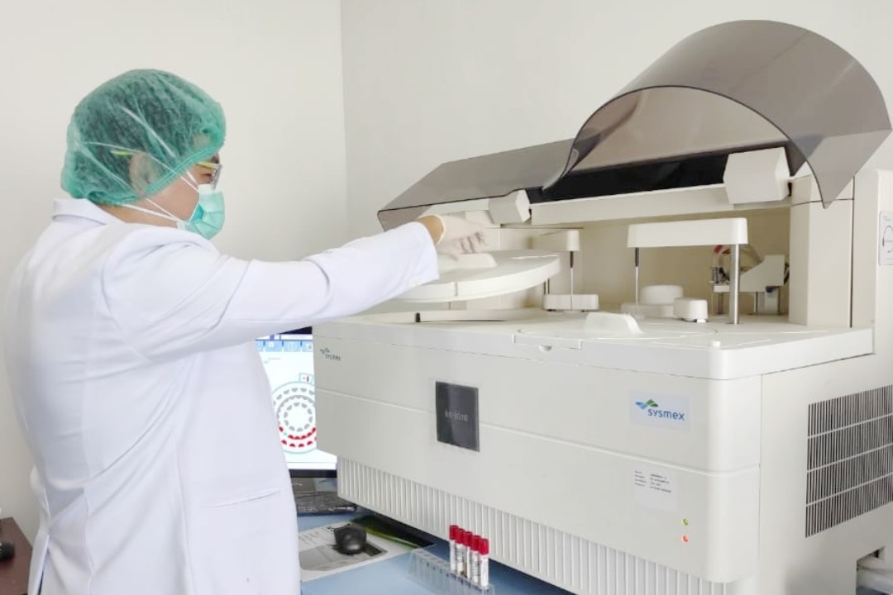

Instalasi Laboratorium
Pengelolaan data dengan Laboratory Information System (LIS) yang cepat, akurat, dan terpercaya.
Penjelasan Umum
Instalasi Laboratorium RSUD Tugu Koja mendukung proses diagnosis, penanganan, dan evaluasi pengobatan pasien melalui beragam tes laboratorium unggulan.
Pengelolaan data laboratorium menggunakan Laboratory Information System (LIS) terintegrasi, yang memungkinkan hasil pemeriksaan didapat secara lebih cepat, akurat, dan otomatis terhubung ke sistem rekam medis dokter.
Kami melayani pasien dari IGD, rawat inap, rawat jalan, serta pasien rujukan untuk menunjang kebutuhan diagnosis yang optimal dan komprehensif.
Senin - Sabtu
08.00 - Selesai
Tersedia 24 Jam
untuk kasus darurat
Terintegrasi LIS
Hasil Akurat

Keamanan Sampel
Kami menerapkan protokol ketat untuk keamanan tiap sampel laboratorium.
Jenis Pemeriksaan Laboratorium
Berbagai jenis uji klinis yang tersedia di RSUD Tugu Koja untuk mendukung kebutuhan penunjang diagnostik Anda.
Hematologi Lengkap
Evaluasi menyeluruh terhadap komponen darah seperti sel darah merah, putih, dan trombosit.
Analisa Gas Darah & Elektrolit
Pemeriksaan fungsi pernapasan, oksigenasi darah, serta tingkat keseimbangan elektrolit tubuh vital.
Parasitologi
Diagnostik mikroskopis untuk infeksi parasitik, termasuk pengujian khusus penyakit endemik seperti Malaria dan Filarial.
Hemostasis (PT, APTT, INR)
Pengujian khusus kemampuan fungsi pembekuan darah untuk persiapan operasi bedah maupun kontrol terapi.
Kimia Klinik Lengkap
Pemantauan keseimbangan zat kimia tubuh, mendeteksi fungsi hati, ginjal, kadar glukosa, dan metabolisme.
Imunologi & Serologi
Uji spesifik mendeteksi keberadaan antibodi atau antigen yang berhubungan dengan reaksi autoimun dan infeksi.
HbA1c & CRP
Pemeriksaan esensial untuk memonitor riwayat diabetes kronis (HbA1c) dan mendeteksi kondisi peradangan akut (CRP).
Tes Narkoba (Urine)
Skrining laboratorium yang presisi untuk deteksi cepat keberadaan zat adiktif atau narkotika dalam urin.
Urine Tampung 24 Jam
Analisis kimia medis komprehensif atas total output urin harian untuk evaluasi khusus penyakit ginjal.
Syarat & Prosedur Pemeriksaan
Berikut adalah dokumen dan persiapan yang perlu Anda siapkan sebelum menjalani tes darah atau urin di Instalasi Laboratorium.
Surat Pengantar Laboratorium
Membawa formulir permintaan tes laboratorium asli yang dikeluarkan oleh dokter poli, dokter spesialis, atau IGD.
Administrasi & Kartu BPJS
Membawa kartu identitas (KTP) dan Kartu BPJS aktif (jika pengguna BPJS) ke loket pendaftaran sebelum ke laboratorium.
Untuk pemeriksaan tertentu seperti Gula Darah Puasa, Trigliserida, dan Asam Urat, diwajibkan berpuasa (tidak makan/minum kecuali air putih) minimal 10-12 jam.
help Pertanyaan Umum (FAQ)
Beberapa jenis pemeriksaan darah (seperti gula darah puasa atau kolesterol/profil lipid) umumnya memerlukan Anda untuk puasa selama 8-12 jam sebelumnya. Harap tanyakan kepada petugas atau dokter saat Anda menerima pengantar laboratorium.
Waktu tunggu bervariasi tergantung jenis tes. Mayoritas tes darah rutin dapat diketahui hasilnya dalam waktu 1-2 jam. Namun, pemeriksaan spesifik seperti tes serologi kompleks atau kultur bakteri bisa memakan waktu hingga beberapa hari.
Ya. Melalui Laboratory Information System (LIS) yang terintegrasi, hasil tes laboratorium Anda akan otomatis masuk ke dalam sistem rekam medis elektronik (EMR). Dokter di poliklinik bisa langsung mengakses hasilnya secara digital.
Perhatian Penting
- Pasien IGD dengan kondisi kritis mendapat prioritas (Cito) pemeriksaan laboratorium.
- Pastikan wadah penampung urin atau feses tertutup rapat dan segera diserahkan agar sampel tidak rusak.
Membutuhkan Jadwal Konsultasi?
Informasi lebih lanjut mengenai jadwal dokter spesialis Patologi Klinik dan pendaftaran tersedia.